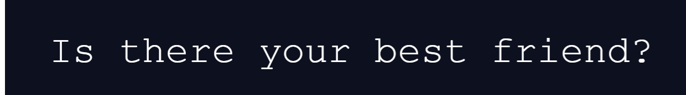
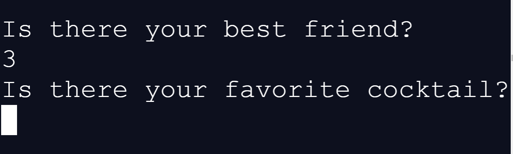

Hopefully, it is the first easily understandable book on Artificial Intelligence (AI) for all girls and boys age 8+. Also, of course, the best entry point for anyone more adult who wants to start understanding of AI and eventually to be capable to create super powerful AIs. By the way, we practice redundancy throughout this book, using very simple words and explaining the same things several times. 
At a huge pace, we are going to a world where people will have an augmented minds. Where a person will get their human mind completed with endless capabilities of an artificial mind — in other words, completed with endless capabilities of the machine mind. For now, we, in a way, already have sort of augmented minds. Since we can resort to the help of machines while thinking. For example, we can already augmente our Minds with additional capabilitie while doing calculations, using calculators in our devices: smartphones, tablets or laptops. Calculators were the first versions of Artificial Minds. But people wanted more. And they finally created THE more. So now people are already able to build Artificial Minds that may be self-learning and becoming better throughout this self-learning process. People can already create Artificial Minds which literally can, on its own, learn from facts of our lives and can be becoming better throughout this self-learning process. Yes, Artificial Minds now can be learning and becoming better entirely on their own. So only an Artificial Mind that can be learning on its own is considered now as a modern AI — and is called Artificial Neural Network, or just Neural Network, NN, for short. In the future, people can chat by thinking — it will be enough for us to just think while chatting. It will inevitably be so since it is already possible for people — a proven experimental fact — to use only their thoughts for controlling diverse devices, including laptops, smartphones and robots. That's where everything is heading. It is totally good to do so. You always, at any point, can start those courses. On the other hand, it is not absolutely necessary to go only this way. You for sure might try to dive into AI right away -- without any pre-learning. Probably, diving into a completely wonderful world of AI right away might be more exciting and productive. Here you may give it a try. You are fine anyway. It is so since nearly everything that is difficult or hard, has been done by other people for us. Other people have already done that whole "dirty" work for us. All we need, while building a Neural Network, is only to assemble elements of works of other people together -- just like assemble a toy model from LEGO bricks which is easy and pleasant, and of course, interesting: 
In AI building now, we are absolutely building toy models from nice bricks: 
It is funny. So let's have a fun. Just keep in mind that everything difficult has already been done by others for us. After all, we should just enjoy it.
It doesn't take a professor to figure out that this code is simple — since it doesn't have many elements — and within just minutes you will be able to easily build such LEGO houses on your own. Keras allows you to create and train AIs (neural network models) in just a few lines of code. A Model in Keras is defined as a sequence of layers. !!!!! The 1st layer is the input layer. So the first thing to get right is to ensure the input layer has the right number of input features. This can be specified when creating the 1st layer with the input_dim argument and setting it to 8 for the 8 input variables. a binary classification problem As such, it is a binary classification problem (GO as 1 or STAY as 0). Inputs and Outputs SHOULD BE IN THE SAME TENSOR. 6,148,72,35,0,33.6,0.627,50,1 1,85,66,29,0,26.6,0.351,31,0 8,183,64,0,0,23.3,0.672,32,1 1,89,66,23,94,28.1,0.167,21,0 0,137,40,35,168,43.1,2.288,33,1 https://machinelearningmastery.com/tutorial-first-neural-network-python-keras/https://medium.com/@sakeshpusuluri123/activation-functions-and-weight-initialization-in-deep-learning-ebc326e62a5c At first ...if you understand, are getting the feel of differences between these 3 cases then you understand what is the derivative of function, gradinent of function. to write/calculate/inffer derivatives, gradient So that's pretty cool. One cool thing about it is that when we get new data we easily use ... About gradient descent. Don't despair. Gradient descent is way more efficient. Gradient descent only does a few calculations far from the optimal solution and increases the number of calculations closer to the optimal value. in other words gradient descent identifies -- is trying to find -- the optimal value by taking big steps when it is far away and baby steps when it is close. 
Fun-fact! Imagine a square spot: 
Next, imagine that this square spot consist is 3 rectangle lamps (channels): red lamp, green lamp, blue lamp: These 3 lamps (red, green, blue) composed together can do awesome things. Each of these 3 lamps can light at a level of intensity. A lamp cam light at a minimum level, so the lamp is off: A lamp cam light at a maximum level, so the lamp is lighting at maximum: A lamp cam light at a level between a minimum level and a maximum level: Say, at an intermediate level. Why can a lamp light at different levels of intensity? It is because we can give the lamp a different size of energy every moment. When we give a lamp zero of energy every moment then the lamp does not light, the lamp is off. When we give a lamp maximum size of energy every moment (depending on the tech possibilities), then the lamp is lighting at its a maximum level. , the lamp is off. The level of lighting may be zero, a lamp is off or the level of lighting may be a maximum of possible value, called a pixel. Your computer's screen consist of a lot of such square spots composed together: In turn, each square spot consist is 3 rectangle lamps (channels): red lamp, green lamp, blue lamp: In other words, red channel, green channel, blue channel. When we see a gray pixel it means each of the 3 lamps (channels) has the same level of brightness. Of course, each pixel is an 8-bit integer from 0-255. 0 is full black, while 255 is full white. This what we call a single-channel pixel. It's called monochrome. Each of these 3 lamps (channels) always takes an 8-bit integer. 3 channels -- 24 bits total. Each of these channels also likely takes an 8-bit integer. 3 channels -- 24 bits total -- 16,777,216 possible colors! WHY exactly 512 nodes? 
At the first step, we will look at the simplest case when all the 3 rectangle lamps act together: -- the absolute white color when the value of brightness of each of 3 rectangle lamps equals 255: -- the absolute black color when the value of brightness of each of 3 rectangle lamps equals 0: Plus, a pixel -- squre light spot consisting of 3 rectangle lamps may have any of 254 colors indeed being 254 shades of gray. Really, 254 shades of gray = 1 to 254 inclusive: 3 rectangle lamps of a pixel may have the same value of brightness from 1 to 254 inclusive. in the field of AI Of course, Multipliers are just numbers. Just numbers like 3, 5, 0.7 or - 9, for example. Just imagine for a second that the machine doesn't undestand what means Input1 equal to 5, what means Input2 equal to 3 and, of course, what means Input3 equal to 3. The machine doesn't understand that it all is about partying. Absolutely. Nevertheless, the machine easily calculates proper Multipliers. It is so because we first gave it our expected Outputs for different Cases. This awesome conclusion opens up great prospects for building Neural Networks. So, since a machine doesn't understand what it all is about — then while training — we can feed the machine any numbers about anything if we simultaneously give it our expected Outputs for different Cases. For now, just let's notice this. some function that squishes the real number line into the range between 0 & 1 and Maybe you only want it to be active when the sum is bigger than say 10 Organize all our Inputs from one layer into a row ( as a vector). from that layer of Inputs into a row of numbers arranged this way. And let's do the same with our Multipliers -- which are just some numbers (0.1, 0.1, -0.1). You literally should play around with that simple example of partying. To get the feel -- get a sense -- of how AI works with simple tasks. To get the feel of -- get a sense for-- how AI works -- the elemantary elements of AI. Learning is all about the art of figuring out how each input (weight) played its part in creating error. Since any more complicated task is just solved by compination of such elemantary elements. A relevant reminder The interface for the neural network is simple: it accepts an input variable as information and a weights variable as knowledge, and it outputs a prediction. 
For the sake of simplicity, let's suppose that the mood of Alex depends only on one thing -- on the temperature. Suppose that our Neural Network works as follows: · the robot Alex feels always happy if the temperature is more or equal to 10 degrees Celsius. · the robot Alex is always unhappy if the temperature is less 10 degrees Celsius. 
So the single neuron in the Alex's brain should work as follows: 
So when the neuron eats 15 then the neuron ejects (defecate, dumps) the number 1which is interpretended by Alex as -- I am happy. when the neuron eats 7 then the neuron ejects the number 0/b>which is interpretendeded by Alex as -- I am unhappy. Suppose we don't know what multiplier is good for our Neural Network. In this case we could calculate this multiplier, leaning on our expectations . So we might say that we expect the following: 
So within just minutes you will become able to create your first Artificial Neural Network that works. Imagine that you got 3 friends and you want to give 2 oranges to each friend. How many oranges do you need? Here we go: 3(friends) * 2(oranges) = 6 oranges Okay, it is easy. Imagine that you got 4 friends and you want to also give 2 oranges to each friend. How many oranges do you need? Here we go: 4(friends) * 2(oranges) = 8 oranges So the formula to calculate oranges will be as follows: formula = friends * oranges So we might say that a formula is a method of doing something. Or, in our case, a formula is a method of calculating something. Imagine that your State (the USA, UK, Canada or any other one) gives you, as a gift, some coins every day. During each month. Such a good state. The number of coins you get every specific day is calculated with some formula. So you get: 1st day = 1 * 1 = 1 coin 2nd day = 2 * 2 = 4 coins 3rd day = 3 * 3 * 3 = 27 coins 4th day = 4 * 4 * 4 * 4 = 256 coins .... and so on. We might also represent this aproach this way: 1st day = 1 * 1 = 11 = 1 coin 2nd day = 2 * 2 = 22 = 4 coins 3rd day = 3 * 3 * 3 = 33 = 27 coins 4th day = 4 * 4 * 4 * 4 = 44 = 256 coins .... and so on. So we might say that the formula used by the State looks like this: coins = dayday It is easy. 
Suppose that for some reasons, you have the following preferences about the weather : · you always go to outside if the temperature is less 25 degrees Celsius. Else, if the temperature is more or equal to 25 degrees Celsius, then you always gstay home. your best friend and it is not raining — regardless of whether there is your favorite cocktail or not: · be working — be giving out its thoughts; · be self-learning. We will first take a look at how AI is working. So we're going to build probably the simplest AI that would provide you with its recommendation of either going to some specific party, or staying home. 
Let's get started. Suppose that for some reasons, you have the following preferences about spontaneous parties: · you always go to a party if there is your best friend and it is not raining — regardless of whether there is your favorite cocktail or not: 


· you always go to a party if there is your favorite cocktail and it is not raining — regardless of whether there is your best friend or not: 

· but if it is raining you always go to a party only if there are both your best friend and your favorite cocktail: 
Okay. As we know, machines love to work with numbers. For this reason, let's convert (turn) each yes into 5 and each no into 3: Of course, this might be any 2 numbers instead of the 5 and 3 — for example, 1 and 2, 2 and 1, 3 and 7, and so on — but we, say at random or for some reason, have chosen the numbers 5 and 3. Okay. From now what we will do exactly is we will always: · convert the fact that there is your best friend into 5 and the fact that there isn't your best friend into 3:  
· convert the fact that there is your favorite cocktail into 5 and the fact that there isn't your favorite cocktail into 3:  
· convert the fact that it is raining into 5 and the fact that there is no rain into 3:  
Easy! So by this simple trick we made the computer able to distinguish diverse cases of our human lives absolutely well. Wow! It is just great. So, for example, if we know that at the party there is your best friend, there isn't your favorite cocktail and it isn’t raining then we get the following:
The computer sees the the following: Input1 Input2 Input3 3 2 2 In programming, such facts of life converted into numbers — either into 5 or into 2, for example — are called Inputs: 
Input1 = 5 Input2 = 5 Input3 = 5 Okay. Next, the machine has to multiply each Input by an individual Multiplier: So, we may get the Product1, Product2 and Product3: Product1 = Input1 * Multiplier1 = 5 * 0.1 = 0.5 Product2 = Input2 * Multiplier2 = 3 * 0.1 = 0.3 Product3 = Input3 * Multiplier3 = 3 * (-0.1) = -0.3 As you can see, we multiply each input by its own Multiplier (weight). These Multipliers (0.1, 0.1, -0.1) are very important in work of our AI. These Multipliers (0.1, 0.1, -0.1) are very important since, as we will see further, precisely they do the most work while making the recommendation. For educational purposes we got these Multipliers ready-made but in real life, as we will see very soon, calculating such Multipliers — one Multiplier for each Input — is the most important task while building any AI. Calculating such Multipliers is THE challenge while building any AI. Anyway, for educational purposes, let's suppose that we have already been given these Multipliers: Multiplier1 = 0.1 Multiplier2 = 0.1 Multiplier3 = -0.1 Okay. Next, as we can see below, the machine sums all those Products: 
Since: Product1 = 0.5 Product2 = 0.3 Product3 = -0.3 Then: Sum = Product1 + Product2 + Product3 = 0.5 + 0.3 - 0.3 = 0.5 So, Sum = 0.5. In other words, we first have multiple inputs by their Multipliers, and then we have to sum the Products. Pay attention, next whenever we say Sum we always imply precisely Sum of our Products — for example, Product1 + Product2 + Product3. MAYBE ALWAYS SAY -- Sum of our Products This Sum of our Products is called a weighted sum of the input, or a weighted sum for short. Also, some refer to the weighted sum as a dot product, as you’ll see. So, Sum of our Products — or Sum for short — equals 0.5. Next, the machine puts our Sum into a Main Formula: 
So if whenever our Sum is equal to or more than 0.5, then our Main Formula gives out 1: which can be converted by us into the phrase — I'd like to recommend you to GO to the party, my host; or GO for short. But else (for example, if whenever our Sum has been equal to 10), then our Main Formula gives out 0: which can be converted by us into the phrase — I'd like to recommend you to STAY home, my host; or STAY for short. As we can see, everything is easy! So, according to our Main Formula, since our Sum is equal to 0.5, it means the Sum meets the condition that If our Sum is equal to or more than 0.5 so the machine gives out 1: 
which are converted by us into GO. Of course, when other Case happens to be there — when other Inputs happen to be there — then the recommendation may be completely other. It is exactly the way how any AI works. For now, you need to understand just 4 things. The 1st thing There are some Inputs — some facts of life converted into numbers — 5 or 3, for example. The 2nd thing There is some Multipliers — one Multiplier for each Input — 0.1, 0.1, -0.1, for example. The 3rd thing There is some Sum of Products that is calculated by multiplying each Input with its own Multiplier and next summing all the Products — 0.5, for example. The 4th thing There is some Main Formula (using the Sum) by which the machine gives its recommendation, either 1 or 0 — 1, for example. Back to our AI. What is a neuron in this system? We can see that from the picture below: People call the orange field in the system an artificial neuron, or just neuron for short. So our simplest AI — the simplest Neural Network -- consists of just one Neuron: If you do not know anything about Neurons it is absolutely okay and there is not any need to know something about them. As we can see, our Neuron eats the following numbers: 5, 3, 3 and then ejects one single number, the number 1: Similarly, any Neuron on Earth eats some numbers (5, 3, 3 — for example) and then ejects some numbers. As we can see, sometimes a Neuron can eject just one single number (1 — for example). When a Neuron ejects a number more than some threshold number scientists say that the Neuron does fire here. So everything you need to know about Neurons is that at some moment of time a Neuron is eating something in order then to eject something. In scientific terms, each Neuron takes in Inputs and then gives out its Output. We will just use this word Neuron since it is very poular in AI. Very soon you will understand what it means So, first of all, we will take a close look at how exactly a Neuron works in Machine Learning. The number the Main Formula gives out — the number 1 in our case — is called Output of the neuron. Any neuron first receives something and then gives out something. Always. 111111111111111 So our neuron first receives those Inputs — 5, 3, 3 — and then gives out its Output — the number 1. So the case that we have just examined: might look like this: 
Hopefully, you agree that it makes the representation of any Case both clear and short. So we expect from our Neural Network that it will give out the following Output in each specific case: 
Okay. Now, if wanted, you can manually calculate Output for each Case of 8 and you will see that our Neuron gives out those Outputs that we expect. Just do it, if you want. Okay. So our Neuron gives out Outputs consistant with expected Outputs and it means our Neuron works absolutely well. Our Neuron works absolutely well only because we got these right Multipliers (5, 5, -5) from someone. We were given these Multipliers. In real life, we should calculate these Multipliers on our own. And very soon we will. Now, we're going to look at how our Neuron works in an automated way, diving in the code itself. It will be easy. Just click the Run button being in the center of the top bar: 
After you click the Run button, in the result — in the lower dark window — you will see the following text:  Please just use 3 as yes and 2 as no. For example, type 3 like this: 
and then press the Enter button on the keyboard. And you will see this:  you may type the rest of Inputs this way. You may always type all Inputs this way. Now again, if wanted, you can play around with our AI, feeding diverse Inputs — of the table of the all possible cases — to it and getting various recommendations. See Explainations to Code Okay. As we can see, everthing is easy and our AI works well. Let's make our AI even better. In order to really make our AI better we can do 2 things. The 1st thing to make our AI better Since the Output of our Main Formula changes by a jump — is either equal to 0 or equal to 1: 
this single fact, for some reasons, makes our AI less able to self-educating. Indeed, having this Main Formula would make any AI less good to solving many of problems of the real world. So, in reality, in the most cases, precisely this Main Formula is used: 1 MainFormula = ————— 1 + 2.7 — Sum Or, if wanted, the same above formula may be represented either this way: MainFormula = 1 / (1 + 2.7 — Sum) or this way: MainFormula = 1 / (1 + 2.7^(— Sum)) The chart of this Main Function looks this way: 
Let’s consider how this Main Formula works for some specific Sums. When Sum = 0 MainFormula = 1 / (1 + 2.7 — 0) Since 2.7 — 0 = 2.70 = 1 then: MainFormula = 1 / (1 + 1) = 1 / 2 = 0.5 Exactly 0.5. When Sum = 6 MainFormula = 1 / (1 + 2.7 — 6) Since 2.7 — 5 ≈ 0.003 then: MainFormula ≈ 1 / (1 + 0.003) ≈ 1 / 1.003 ≈ 0.997 Almost 1, a bit less than 1. When Sum = — 6 MainFormula = 1 / (1 + 2.7 — (— 6) = 1 / (1 + 2.76) Since 2.76 ≈ 387 then: MainFormula ≈ 1 / (1 + 387) ≈ 1 / 388 ≈ 0.003 Almost 0, a bit more than 0. The 2.7 in the Main Formula represents the number e, known as Euler's number, approximately equal to 2.71828. So, actually, the Main Formula may be represented this way: 1 MainFormula = ————————— 1 + 2.71828 — Sum or this way: 1 MainFormula = ————————— 1 + e — Sum So the 1st thing to make our AI better was to get the new Main Formula. The 2nd thing to make our AI better Working with Inputs, let's convert each yes into 3 and each no into 2: 
Yes. It was easy! if the input is 0 the weights aren't adjusted ! The option with 1 and 0 was more bad since there was 0. In reality, when yes is converted into 0 it makes process of self-educating for the AI sometimes impossible. For example, when at a party there isn't your best friend, there isn't your favorite cocktail and it isn't raining we expect from the AI that the recomendation will be to STAY home i.e. 0 (Case 7) -- but it will be impossible. It will be impossible for our AI since when each of our Inputs is 0 the Multiplaers to these Inputs do not matter: Input1 * Multiplier1 = 0 * Multiplier1 = 0 Input2 * Multiplier2 = 0 * Multiplier2 = 0 Input3 * Multiplier3 = 0 * Multiplier3 = 0 After all, we finally get our AI training: With Чтобы данные можно было копировать -- таблица должна быть в коде!!! Now we should CHANGE THE MAIN FORMULA IN THE CODE.
import numpy as NiceTool
Input1 = str(input("Is there your best friend?\n"))
if Input1 == "yes":
friend = 1
else:
friend = 0
Input2 = str(input("Is there your favorite cocktail?\n"))
if Input2 == "yes":
cocktail = 1
else:
cocktail = 0
Input3 = str(input("Is it raining now?\n"))
if Input3 == "yes":
rain = 1
else:
rain = 0
Inputs = [friend, cocktail, rain]
print("All our Inputs: ", (Inputs))
Multipliers = [0.5, 0.5, -0.5]
print("All our Multipliers: ", (Multipliers))
Sum = NiceTool.dot(Inputs, Multipliers)
print("Our Sum: ", Sum)
print()
print("THE ROBOT’s RECOMMENDATION: ")
# The Main Formula comes into play below:
if Sum >= 0.5:
print("I'd like to recommend you to GO at the party, my host.")
else:
print("I'd like to recommend you to STAY home, my host.")
See Explainations to Code! First of all, we're gonna have to import numpy as Nice_Tool. import numpy as Nice_Tool Then we'll define the Main Formula: def Main_Formula(self, Sum): if Sum >= 0.5: return 1 else: return 0 So we already have the following code:
import numpy as Nice_Tool
def Main_Formula(self, Sum):
if Sum >= 0.5:
return 1
else:
return 0
Okay. For other example, let's take the Case 2 that at a party there is your best friend, there isn't your favorite cocktail and it isn’t raining then we have the following: bla But what exactly does it mean? How exactly computers work? In reality, computers do not understand any numbers. Everything a computer may understand is understand of if there is an electric current in some wire or not: 
Only this thing. The case when there is an electric current in the wire is called 1 (one) by people and the case when there is not an electric current in the wire is called 0 (zero): Any sort of information that a computer understands and, respectively, gets is the information of if there is an electric current in some wire or not. For example, any visual information that a computer gets from a camera, in reality, is the understanding by the computer of how many times during some time there was an electric current in some wire and how many times during the same time there wasn't an electric current in the same wire: 
Each case when there was an electric current in the wire is called 1 (one) and each case when there wasn't an electric current in the wire is called 0 (zero). So, only thanks to the way computers see the world, some information of sound that a computer is getting from, say, a microphone can have the following look: 
For now, you need to undestand that just for this reason people say that computers see any information only as a chain (sequence) of zeros and ones. For example, below here is a representation of the way computers see diverse human activities: 
LEARNING 
So, for example, BLA BLA BLA You can play aroind with our AI giving it different Inputs in each case. It is one of ways how AI can work. 

With Bitcoin: 
The Best Entry Point in
Learning is a wonderful attraction: 
BestEntryPoint.github.io Authors' Telegram Account: BestEntryPoint |